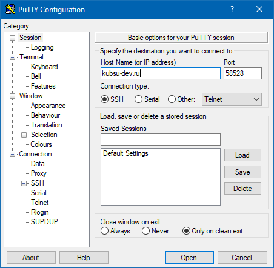
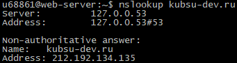
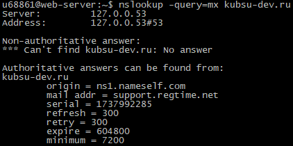

Задание 1
1. С помощью клиента PuTTY подключился к учебному серверу kubsu-dev.ru, указав соответствующий адрес, порт 58528 и тип подключения SSH:

2. Используя команду ping kubsu.ru, получил информацию об IP-адресе веб-сервера kubsu.ru, а также информацию о задержке между узлами сети:
3. Посмотрел A-записи домена kubsu.ru можно, используя команду nslookup kubsu.ru:
Чтобы посмотреть MX-записи домена kubsu.ru, ввел команду nslookup -query=mx kubsu.ru:
Аналогично посмотрел A- и MX-записи домена kubsu-dev.ru:
 